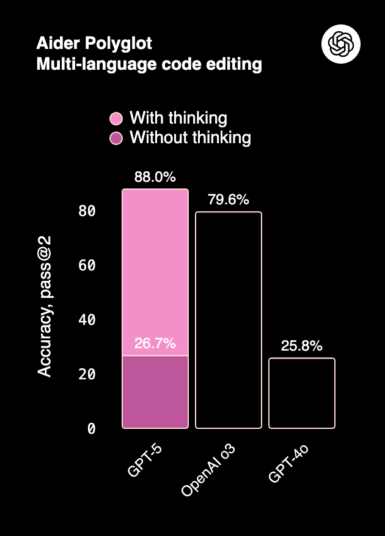
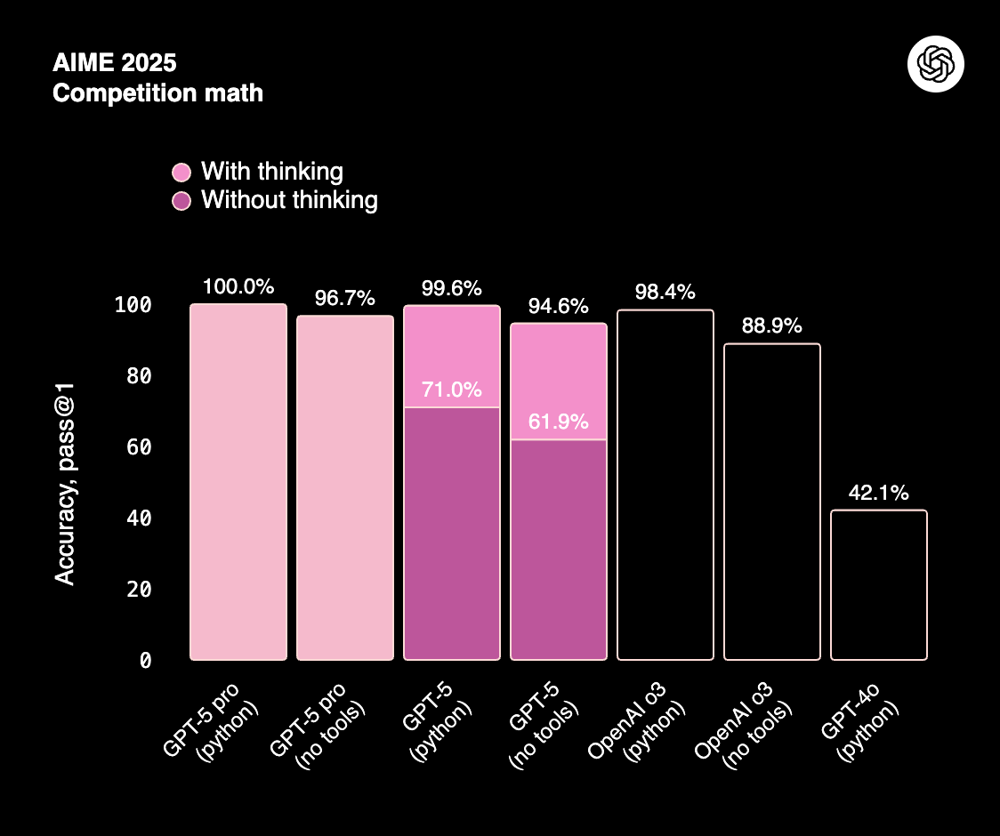
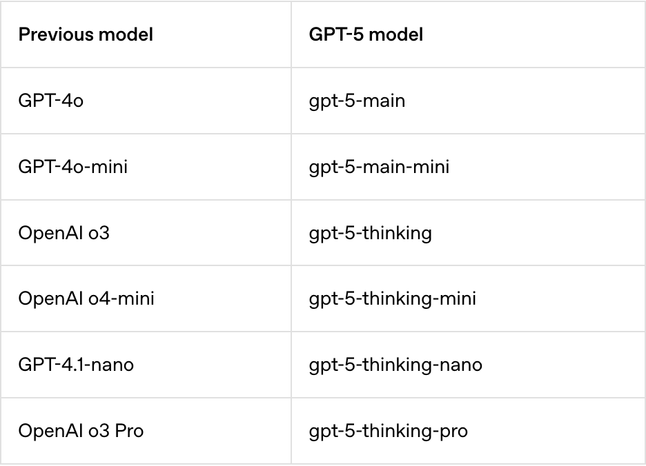
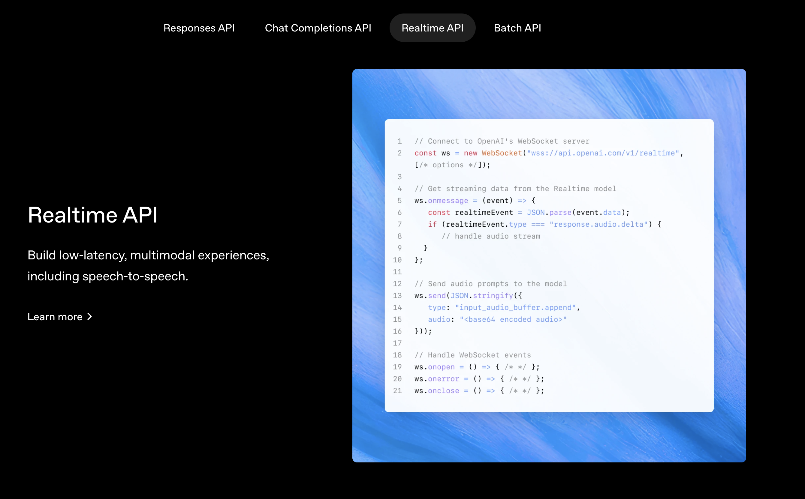
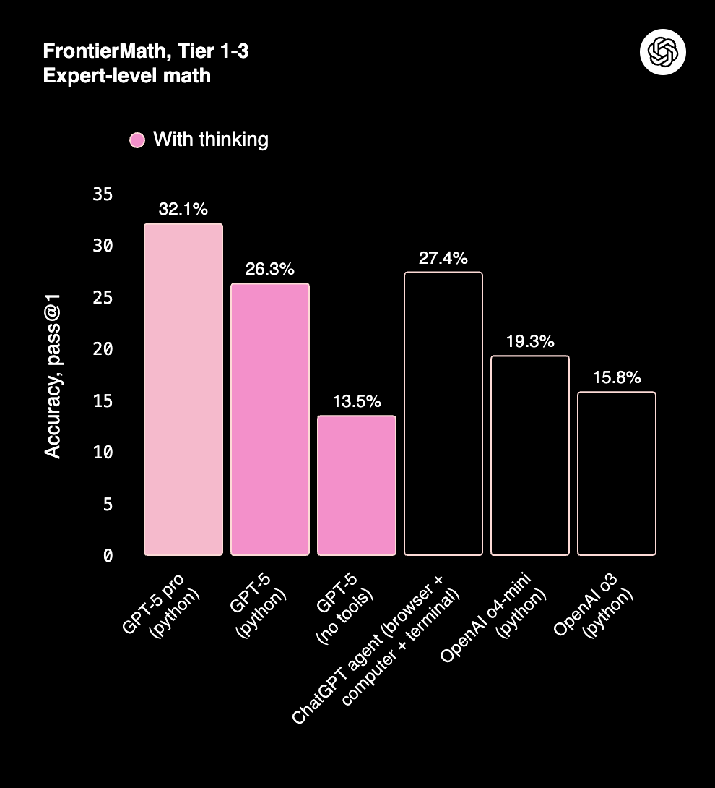
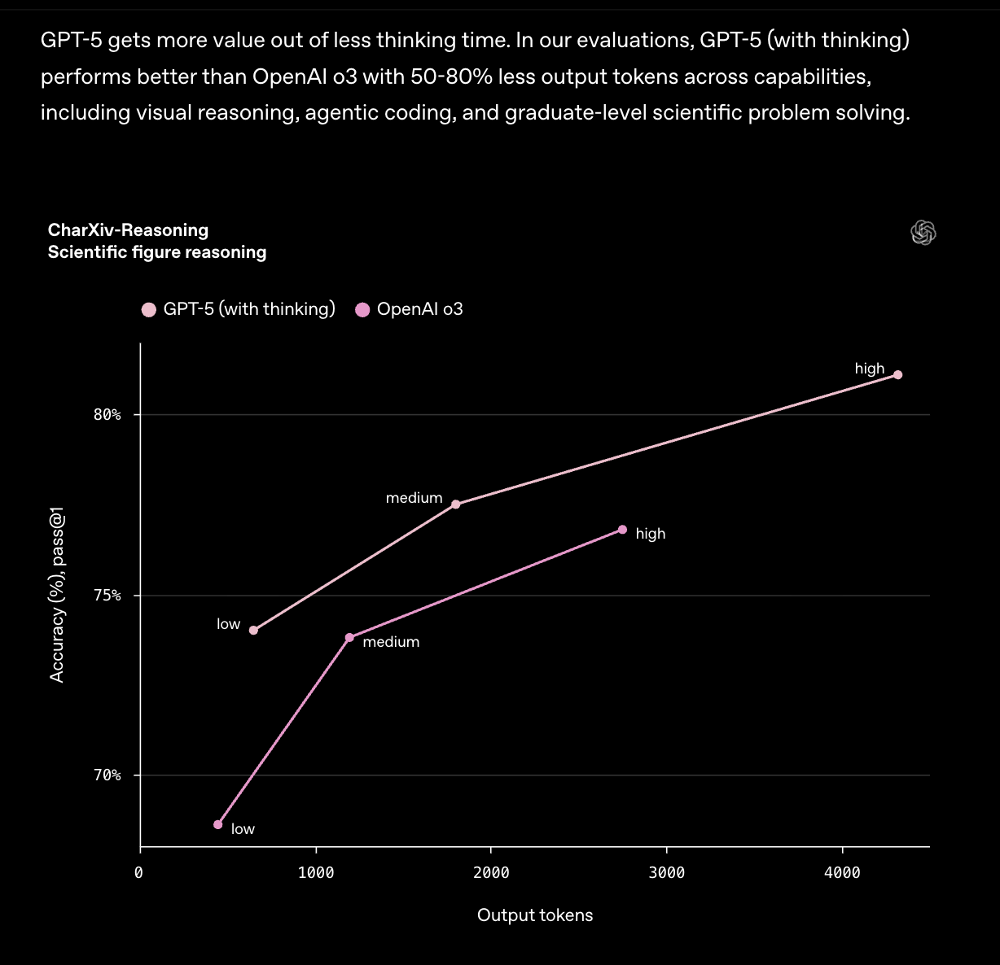
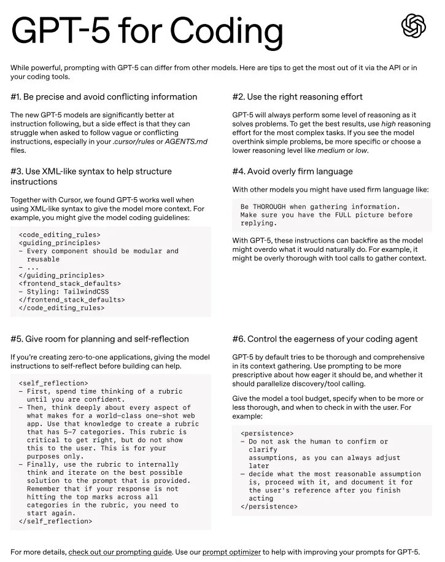

class: center, middle # Remark.js Template Showcase ## A Complete Guide to All Templates ### John Developer #### December 2024 --- background-image: url(assets/cover.png) --- class: center, middle, title-slide # Advanced Presentation Templates ### By Jane Designer ### Tech Corp International ### December 15, 2024 .footnote[Annual Tech Conference 2024] --- # Table of Contents 1. Introduction 2. Template Types 3. Code Examples 4. Visual Elements 5. Conclusion --- # Table of Contents -- **1. Introduction to Remark.js Templates** -- **2. Title & Navigation Templates** -- **3. Content Layout Options** -- **4. Interactive Elements** -- **5. Q&A and Resources** --- # Agenda 1. <a href="#/section1">Getting Started</a> -- 2. <a href="#/section2">Core Templates</a> -- 3. <a href="#/section3">Advanced Layouts</a> -- 4. <a href="#/section4">Best Practices</a> -- 5. <a href="#/section5">Questions</a> --- # Sarah Thompson - Senior Software Engineer - Tech Innovations Inc. - 10+ years in web development - Author of "Modern Presentation Design" - Contact: sarah@example.com --- <div class="slide"> <h1>Michael Chen</h1> <div style="display: flex; align-items: center;"> <ul style="flex: 1;"> <li>Lead Developer</li> <br> <li>Frontend Architecture Expert</li> <br> <li>Created 50+ presentation templates</li> </ul> </div> </div> --- <section> <h2>Dr. Emily Watson</h2> <img class='r-stretch' data-src='../assets/speaker1.jpeg' alt=''> <p> <h3>Chief Technology Officer at DataCorp</h3> </p> </section> --- class: center, middle # Section 1: Getting Started --- class: center, middle, section-title # Section 2: Core Concepts --- class: center, middle <h1> <span style="background-color: lightgreen"> Section 3: Advanced Features </span> </h1> --- class: center, middle <h1> <span style="background-color: lightgreen"> Demo: Building Your First Template </span> </h1> --- class: center, middle <h1> <span style="background-color: lightgreen"> Hands-on: Create Custom Styles </span> </h1> --- class: center, middle <h1> <span style="background-color: lightgreen"> Whiteboard: Layout Architecture </span> </h1> --- class: center, middle <h1> <span style="background-color: lightgreen"> Notebook Demo 1 - Interactive Components </span> </h1> --- # Key Features -- - Markdown-driven slides -- - Simple and clean syntax -- - Presenter mode support -- - Customizable themes --- # Comparison of Approaches .pull-left[ **Traditional Slides:** - Complex software - Binary formats - Limited version control ] .pull-right[ **Markdown Slides:** - Text-based - Git-friendly - Portable ] --- <div style="display: grid; grid-template-columns: 1fr 1fr; gap: 20px;"> <div>  <p>Lightning Fast</p> </div> <div>  <p>Dead Simple</p> </div> </div> --- <div style="display: grid; grid-template-columns: 1fr 1fr; grid-template-rows: 1fr 1fr; gap: 32px;"> <div style="background: #f6fff6; border-radius: 18px; padding: 20px;"> <img src="../assets/icon1.png" alt="" style="width: 60%;"> <div style="font-weight: 600;"><span style="color: #2e7d32;">Planning</span></div> </div> <div style="background: #f6faff; border-radius: 18px; padding: 20px;"> <img src="../assets/icon2.png" alt="" style="width: 60%;"> <div style="font-weight: 600;"><span style="color: #1565c0;">Development</span></div> </div> <div style="background: #fff6fa; border-radius: 18px; padding: 20px;"> <img src="../assets/icon3.png" alt="" style="width: 60%;"> <div style="font-weight: 600;"><span style="color: #ad1457;">Testing</span></div> </div> <div style="background: #f9f6ff; border-radius: 18px; padding: 20px;"> <img src="../assets/icon4.png" alt="" style="width: 60%;"> <div style="font-weight: 600;"><span style="color: #6a1b9a;">Deployment</span></div> </div> </div> --- # Code Example ```python def create_slide(title, content): """ Generate a new slide with given title and content """ slide = f"# {title}\n\n{content}" return slide # Usage my_slide = create_slide("Welcome", "This is the content") print(my_slide) # Output: # Welcome\n\nThis is the content ``` --- # Remark Configuration ```javascript var slideshow = remark.create({ // Set aspect ratio ratio: "16:9", // Enable syntax highlighting highlightStyle: 'monokai', // Enable line highlighting highlightLines: true }); ``` **Key Points:** - Configure once in your HTML - Multiple themes available - Supports various languages --- # Multiple Examples .small-code[ ```python # Example 1: Basic slide def basic_slide(text): return f"# {text}" # Example 2: With fragments def fragment_slide(items): fragments = "\n--\n".join(items) return fragments # Example 3: With styling def styled_slide(title, style_class): return f"class: {style_class}\n\n# {title}" ``` ] --- <div style="text-align: center;">  </div> --- <div style="text-align: center;">  <p style="font-size: 14px; color: gray;">Figure 1: System Architecture Overview</p> </div> ---  --- <div style="display: grid; grid-template-columns: repeat(3, 1fr); gap: 20px;">  </div> --- background-image: url(../assets/profile_pic.png) --- # PowerPoint vs Remark.js <div style="display: flex; gap: 40px; justify-content: center;"> <div style="flex: 1;"> <h3>PowerPoint</h3> <ul> <li>GUI-based</li> <li>Binary format</li> <li>Requires software</li> </ul> </div> <div style="flex: 1;"> <h3>Remark.js</h3> <ul> <li>Text-based</li> <li>Markdown format</li> <li>Browser-based</li> </ul> </div> </div> --- # Markdown Presentations ## ✅ Advantages - Version control friendly - Lightweight and fast - Easy to share and publish ## ❌ Limitations - Less visual design control - Learning curve for non-developers - Limited animation options --- # Prompt Basics ## Components of the prompt  --- # Components of the prompt: <span style="color: green">instruction</span> --- # Components: <span style="color: green">instruction</span>, <span style="color: black">context</span> --- # Components: <span style="color: green">instruction</span>, <span style="color: black">context</span> <span style="color: #0d8eb9">input data</span> --- # Components: <span style="color: green">instruction</span>, <span style="color: black">context</span> <span style="color: #0d8eb9">input data</span>, <span style="color: red">output indicator</span> --- class: center, middle # Q&A --- class: center, middle # Q&A & Break --- # Q&A & Summary - **Markdown Syntax**: Simple and intuitive - **Customization**: CSS-based styling - **Portability**: Works in any browser - **Version Control**: Git-friendly format - <span style="color: grey">Optional Exercise</span> - <span style="color: grey">Create your own custom theme</span> --- # Key Takeaways -- 1. **Simplicity**: Remark.js makes presentations as simple as writing markdown -- 2. **Flexibility**: Customize everything with CSS and JavaScript -- 3. **Collaboration**: Work together using version control -- 4. **Distribution**: Share via URL, no special software needed --- class: center, middle # Break --- class: center, middle # Break - 10 minutes --- # Poll Question ```text Which presentation tool do you prefer? A. Traditional PowerPoint B. Google Slides C. Markdown-based (Remark/Reveal) D. Keynote ``` --- # Exercise: Create Your First Slide ## Instructions: 1. Open your text editor 2. Create a new HTML file 3. Add the Remark.js boilerplate ## Expected Outcome: - A working presentation file - One custom slide ## Time: 15 minutes --- # Connect With Me ## 📚 [Course materials](https://github.com/username/remark-templates) ## 🔗 [LinkedIn](https://www.linkedin.com/in/johndeveloper/) ## 🐦 [Twitter/X](https://x.com/johndeveloper) ## 📺 [YouTube](https://www.youtube.com/@johndeveloper) ## 📧 Email: john@example.com --- # Resources & Documentation ### Official Documentation - [Remark.js Wiki](https://github.com/gnab/remark/wiki) - [Markdown Guide](https://www.markdownguide.org/) - [API Reference](https://github.com/gnab/remark#api) ### Tutorials & Guides - [Getting Started Guide](https://github.com/gnab/remark#getting-started) - [Video Tutorial](https://www.youtube.com/watch?v=example) - [GitHub Examples](https://github.com/gnab/remark/wiki/Gallery) ### Community - [GitHub Discussions](https://github.com/gnab/remark/discussions) - [Stack Overflow](https://stackoverflow.com/questions/tagged/remark) --- # References 1. [Hauer, Ole Martin. "Remark.js Documentation" GitHub 2024](https://github.com/gnab/remark) 2. [Markdown Guide - Extended Syntax](https://www.markdownguide.org/extended-syntax/) 3. [CSS Grid Layout Guide](https://css-tricks.com/snippets/css/complete-guide-grid/) 4. [JavaScript Presentation Frameworks Comparison](https://example.com/comparison) 5. [Best Practices for Technical Presentations](https://example.com/best-practices) <p style="font-size: 14px; margin-top: 10px;"> <sup>[1]</sup><a href="https://remarkjs.com">Official Remark.js Website</a> </p> --- # Progressive Disclosure -- First, this concept appears -- Then we build on it -- Finally, we reach the conclusion --- class: inverse, center, middle # Dark Mode Example ## This uses the inverse class ### Great for emphasis --- class: center, middle, section-title # Final Thoughts ## Thank you for exploring these templates! --- class: center, middle # The End ### Questions?